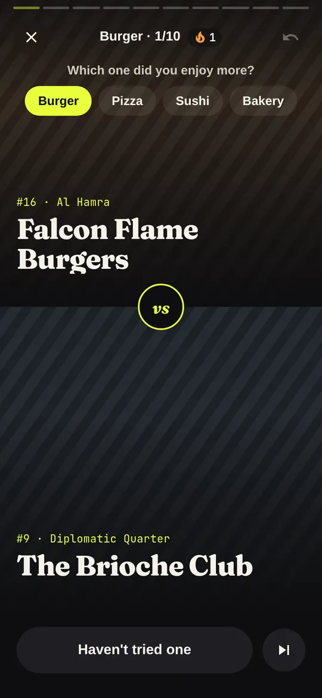
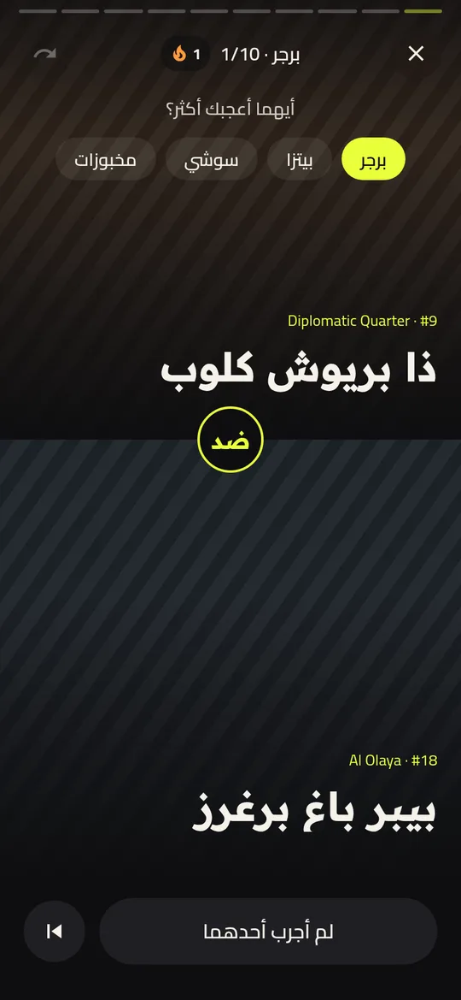
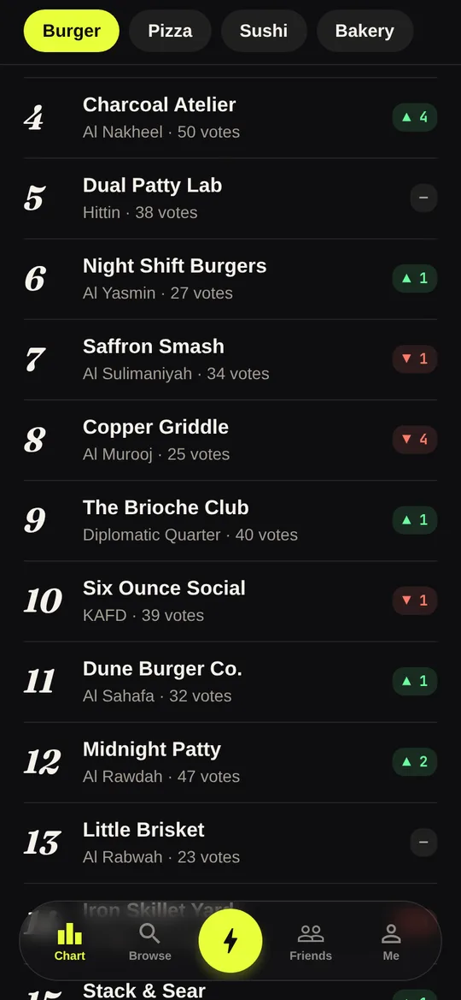
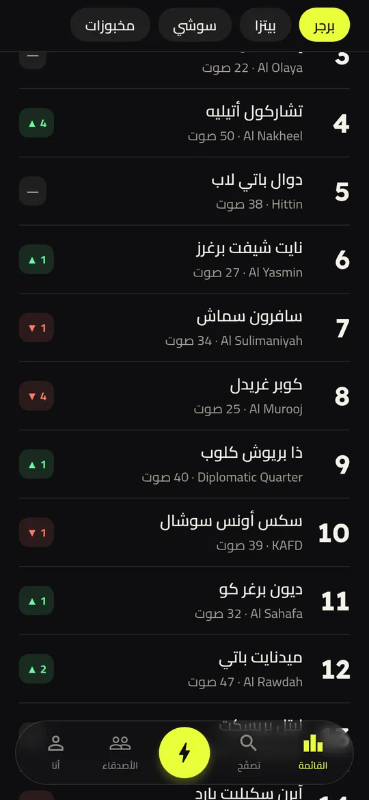
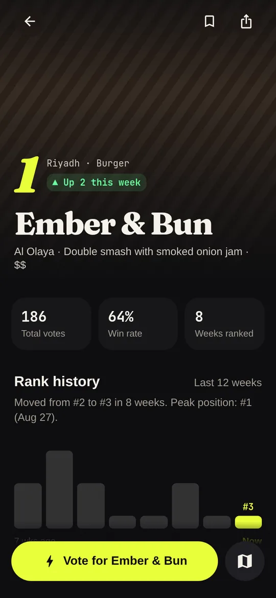
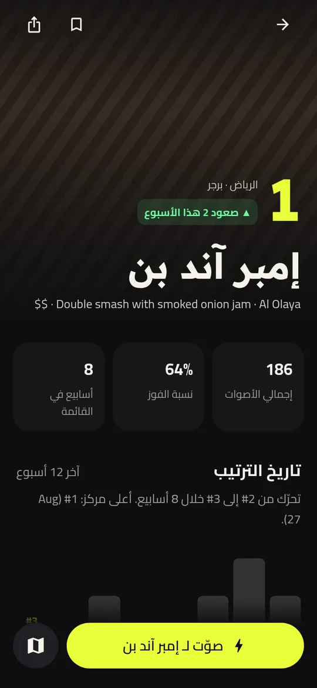

Saudi Arabia's food chartقائمة الطعام في السعودية
The city's taste, ranked weekly. ذوق المدينة، يتجدد كل أسبوع.
No stars. No essays. Just head-to-head votes, and a chart of the places Riyadh keeps choosing. بدون نجوم. بدون مراجعات طويلة. فقط أصوات مباشرة بين مطعمين، وقائمة بالأماكن اللي الرياض تختارها.
Launching in Riyadh on iPhone and Android.قريباً في الرياض على آيفون وأندرويد.


One week, three moves.أسبوع واحد، ثلاث خطوات.
Pick between twoاختر بين اثنين
You see two places you might know. Tap the one you enjoyed more, or skip if you haven't tried one.يظهر لك مكانان. اختر اللي عجبك أكثر، أو تخطَّ إذا ما جربت واحد منهم.


The chart movesالقائمة تتحرك
Every vote nudges both ratings. All week you can watch places climb and slip.كل صوت يحرّك تقييم المطعمين. طوال الأسبوع تشوف مين يصعد ومين ينزل.


Thursday, 6pm: the Dropالخميس ٦ مساءً: النشرة
The official weekly chart locks and publishes, just before the weekend. See who climbed, who fell, and who's new.تُقفل القائمة الرسمية وتُنشر قبل الويكند. شوف مين صعد ومين نزل ومين جديد.
For restaurant ownersلأصحاب المطاعم
Your rank is earned by votes. What you can do is make sure the right people find you, and understand why they choose you.ترتيبك تكسبه بالأصوات. اللي تقدر تسويه إنك توصل للناس الصح، وتفهم ليش يختارونك.
- Claim your place, freeوثّق مطعمك مجاناًVerify ownership with your commercial registration, then update your photos, hours and best seller.وثّق ملكيتك بالسجل التجاري، وحدّث صورك وأوقات العمل والطبق الأشهر.
- Boostالظهور المميزBe the featured place in your category for nearby voters, for two weeks at a time.كن المطعم المميز في فئتك للمصوّتين القريبين منك، لمدة أسبوعين.
- Owner dashboardلوحة المالكSee your win rate, your rivals, how many people nearby haven't tried you yet, and what voters praise.شوف نسبة فوزك، ومنافسيك، وكم شخص قريب منك ما جربك، وإيش يمدحون فيك.